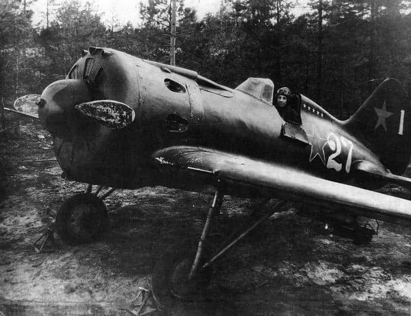

И-16 (ЦКБ-12) — советский одномоторный истребитель-моноплан 1930-х годов, созданный в Опытном конструкторском бюро советского авиаконструктора Николая Поликарпова. Один из первых в мире серийных истребителей-монопланов с убирающимся в полёте шасси. Самолёт имел преимущественно деревянную конструкцию и фанерную обшивку.
Выпускался в СССР и был основным истребителем ВВС РККА вплоть до начала 1942 года.
Первый полёт на прототипе был выполнен 30 декабря 1933 года лётчиком-испытателем Государственного авиационного завода № 39 (ГАЗ № 39) Валерием Чкаловым.
Руководство ВВС отдало предпочтение ЦКБ-12 Поликарпова как более дешёвому и технологичному (деревянно-металлическая, т. н. смешанная конструкция против цельнометаллической И-14) при несколько более высоких лётных характеристиках, перспективах доводки и освоения в производстве.
На Государственных испытаниях в феврале 1934 года два прототипа поднимали в воздух лётчики-испытатели Владимир Коккинаки и Василий Степанчонок. Пилоты давали отнюдь не лестные отзывы о самолёте, а после ознакомления с докладом лётчиков-испытателей Юмашева и Чернавского[en] Алкснис специальным приказом разрешил пилотировать самолёт И-16 только наиболее опытным лётчикам.
Конструкторы намеренно сделали самолёт аэродинамически неустойчивым, исходя из популярной тогда гипотезы, что неустойчивая аэродинамика планера позитивно скажется на манёвренности истребителя в бою.
1 и 2 марта пилотируемый Валерием Чкаловым самолёт И-16 проходил испытания на штопор.
После эксплуатационных испытаний в Крыму с базированием на аэродром в Каче, новейший истребитель был продемонстрирован широкой публике на Первомайском параде в Москве в полёте над Красной площадью.
В 1935 году демонстрировался на Международной авиационной выставке в Италии в Милане.
В конце 1936 года истребители начали поступать в Испанию, где полным ходом шла гражданская война. Самолёты поставлялись в рамках международной помощи Испанской республике, но также, как и Германия, СССР в первую очередь проверял фактические боевые возможности новых видов техники и вооружения.
Продолжением конструкторских идей, реализованных в истребителе И-16, стал опытный самолёт И-180. В первом же испытательном полёте на прототипе И-180 погиб Валерий Чкалов, а затем — и лётчик-испытатель Томас Сузи.
В 1953 году последние поршневые самолёты-истребители И-16 ОКБ Николая Поликарпова были сняты с вооружения ВВС Испании.
Деревянный низкоплан с небывало коротким фюзеляжем — менее 6 м. Обшивка гладкая. Убирающееся шасси. Аэродинамический профиль крыла — ЦАГИ P-II толщиной 13 % (подобный профиль использовался позднее на Ан-2).
Левая и правая половинки монококового фюзеляжа длиной менее 4 м выклеивались казеиновым клеем из лент берёзового шпона на болванах перпендикулярными слоями шпона толщиной 0,5 мм под углом 45° к продольной оси самолёта. Толщина выклеенной обшивки составляла: между рамами № 1 и № 7 — сверху 5,5 мм, снизу 2,5 мм; в хвостовой части после рамы № 7 — 2 мм. Обшивка крепилась на каркас из 4 лонжеронов, 11 стрингеров и 11 шпангоутов из сосны, ясеня и берёзовой фанеры казеиновым клеем и оцинкованными гвоздями. Места соединений и вырезов усиливались фанерными накладками. Зализ фюзеляжа с крылом тоже выклеивался и присоединялся к фюзеляжу с центропланом. Потом обшивка покрывалась нитроклеем, шпаклевалась, оклеивалась миткалевым полотном, снова шпаклевалась и красилась.
Основные нагрузки нёс центроплан из двух наборных лонжеронов, соединённых трубами, который связывал консоли крыла, фюзеляж и стойки шасси. Обшивка спереди фанерная, позади сверху дюралюминиевая для возможности наступить на неё. Фанерная обшивка крыла оклеивалась полотном, которое покрывали несколькими слоями авиационного лака.
Силовой набор хвостового оперения (и элеронов) из дюралюминия. Обшивка рулей полотняная.
Опоры шасси убирались вручную вращением штурвала лебёдки (44 оборота) с тросовой передачей.
Кабина на тип 4 и 5 закрытая, затем снова открытая из-за плохого обзора лётчика, узкого фонаря, некачественного материала остекления, несовершенства механизма открытия фонаря.
На самолёте устанавливались: английский двигатель Bristol Jupiter, выпускавшийся по лицензии в СССР как М-22, затем американский Wright R-1820 Cyclone, производившейся по лицензии как М-25, а после доработок получивший обозначения М-62 и М-63.
По проекту двигатель капотировался кольцом Тауненда, которое заменили на капот NACA для тип 4, но начиная с тип 5 использовали капот Уоттера (предложенный уехавшим в 1920 году в США Михаилом Ваттером, рижанином, учеником Жуковского). Согласно позднейшим исследованиям такой капот увеличил сопротивление самолёта, но был некоторое время в моде в США и СССР. Ha И-16 для снижения сопротивления капота Уоттера выхлопные патрубки мотора выводились в выходные отверстия капота, что позволяло увеличивать скорость проходящего под капотом воздуха за счет эффекта подсоса газовой струи.
С 1939 года (И-16 тип 20 — переделанные из тип 18 и тип 29) применялись подвешиваемые под крылом сбрасываемые топливные баки ёмкостью по 93 л из фибры.
Фюзеляж
Силовой каркас фюзеляжа собирался на стапеле и состоял из 11 рам и одной полурамы, четырёх лонжеронов, восьми стрингеров, хромансилевых трубчатых подкосов и раскосов.
Рамы усиленные, были изготовлены из сплошной берёзовой переклейки, остальные рамы были коробчатой конструкции и обшивались фанерой. К раме крепилась моторама и дюралевая противопожарная перегородка. Лонжероны — это сосновые бруски прямоугольного сечения.
Обшивка фюзеляжа представляла собой скорлупу, выклеенную на болване из нескольких слоёв берёзового шпона толщиной 0,5 мм. Волокна шпона были расположены под углом 90° один к другому и 45° — к оси самолёта. Кабина пилота открытого типа. Пол кабины был выполнен из дюралевого листа. Впереди кабины был установлен плексигласовый козырёк с каркасом из нержавеющей стали. С боков кабины для удобства посадки были сделаны два конструктивно одинаковых откидываемых вбок борта из дюраля. Сиденье лётчика с углублением под парашют было сделано из листового дуралюмина. Сиденье оборудовалось ручным подъёмным механизмом для регулировки под рост лётчика. В боевой обстановке за спинкой сиденья устанавливался бронещит из специальной стали толщиной 8,5 мм.
Лонжероны были стальные из хромансилевых труб. Нервюры ферменной конструкции, в основном применялся дюралевый сплав.
Обшивка центроплана была сверху из листов бакелитовой фанеры толщиной 2,5 мм, спереди и снизу из листов дюраля.
По всему размаху центроплана был установлен двухсекционный закрылок. Управление закрылком механическое, механизм установлен в кабине слева сиденья лётчика сзади рамы
Консоли крыла. Каркас каждой консоли состоял из двух лонжеронов, двенадцати нервюр, лент-расчалок, обода крыла и одиннадцати дополнительных полочек сверху. Лонжероны, стальные, остальной каркас — дюралевый. Обшивка крыла была полотняная. На задней кромке консоли крепился двухсекционный элерон с полотняной обшивкой.
Шасси
Две убираемые в полётё стойки с колёсами и неубираемый хвостовой костыль. В зимнее время была возможна установка лыжного шасси.
Каждая стойка шасси состояла из собственно амортизационной стойки и двух подкосов. Амортизатор был газомаслянный, заряжался сухим воздухом до давления 35 атм и заполнялся спирто-глицериновой смесью (глицерин - 85%, спирт- 15%) в объёме 310 см3.
На каждой стойке было установлено по одному тормозному колесу 700х150. Каждое колесо снабжено камерой с покрышкой, давление накачки воздухом в пределах от 3 до 3,5 атм.
Тормоза были колодочного типа, с механическим тросовым приводом от педалей ножного тормоза. Позволяет тормозить отдельно левым и правым колесом шасси. При пробе двигателя тормоза обеспечивают торможение самолёта без подкладок под колёса (упорных колодок) при оборотах мотора до 1200 об/мин.
Механизм уборки шасси — механический тросовый подъёмник в кабине лётчика, установлен на правом борту кабины у рамы №5.
Хвостовой костыль неубираемый, подрессоренный. Нижняя вилка костыля оснащена цельным дюралюминиевым колесом. Амортизатор костыля газомаслянный. Более ранние версии самолёта имели костыль с резиновым амортизатором и без костыльного колёсика, со сварной пяткой, работающей на скольжение.
Система управления
Управление рулём высоты и элеронами осуществлялось при помощи ручки в кабине лётчика, перемещения которой передаются системой жёстких тяг и качалок на рули. Управление рулём поворота — педалями путевого управления, перемещения передаются тросовой проводкой на шкивах.
Винтомоторная группа
Мотор М-63 — карбюраторный девятицилиндровый звездообразный мотор воздушного охлаждения с двухскоростным центробежным нагнетателем. Номинальная мощность у земли — 930 л.с.
Запуск мотора в аэродромных условиях штатно производится от аэродромного источника электроэнергии, который раскручивает маховик Эклипса (электроинерционный стартёр) до 10000-12000 об/мин. Также можно было запускать мотор от бортового аккумулятора, помогая внешней ручкой раскручивать маховик, или вообще без использования электропитания, раскручивая маховик только вручную от ручки. В крайнем случае возможна раскрутка винта мотора от аэродромного автостартёра, для чего на коке винта имелась храповая втулка.
На самолёте И-16 N-24 применялся двухлопастной воздушный винт с автоматически изменяемым шагом типа АВ-1, углы установки лопастей от 17 до 47 градусов (в дальнейшем угол ограничили 43°), с автоматическим регулятором постоянных оборотов Р-2. Винт тянущий правого вращения, диаметр — 2,8 метра, полный вес — 73 кг. Система регулирования шага винта — гидравлическая.
Топливная система
На самолёте между рамами №1 и №4 фюзеляжа был установлен один внутренний центральный бензобак емкостью 260 литров. Бак цельносварной из материала АМц и обтянут снаружи протектором. На отдельные варианты самолёта под консолями могли устанавливаться два внешних подвесных бензобака из фибры и фанеры, емкостью по 93 литра каждый. Бензиномер поплавкового типа измерял количество горючего только в центральном баке. При наличии подвесных баков горючее из них вырабатывается в первую очередь, после чего пустые баки можно сбросить.
В качестве топлива применялась топливная смесь, так называемый свинцовый бензин , который состоял из авиационного бензина и «Продукта В-10», смешиваемого в пропорции от 1 до 4,5 г этиловой жидкости на 1 кг бензина. Количество добавляемого «Продукта В-10» прямо влияет на детонационную стойкость бензина и зависит от типа мотора.
Электрооборудование
Бортовая сеть на самолёте была двухпроводная без заземления, на 27 вольт постоянного тока. Источник электроэнергии в полёте — генератор постоянного тока (повышенной мощности) типа ГС-10-350 (27,5 вольт), установленный на моторе, с регуляторной коробкой РК-12-350. Для электропитания на земле применяется бортовая кислотная аккумуляторная батарея 12А-5 (24 вольта, 5 ампер часов). После запуска мотора бортовая аккумуляторная батарея может быть снята с самолёта и полёт выполнен без неё.
Для запуска мотора использовался наземный источник электроэнергии — внешняя аккумуляторная батарея большой ёмкости, которая подключалась к бортовой сети посредством разъёма в районе мотора.Электропроводка на самолёте была выполнена проводами ЛПРГС, собрана в жгуты и обмотана миткалевой лентой. Все жгуты закреплены алюминиевыми хомутами.
Радиооборудование
На все самолёты выпуска первого полугодия 1940 года была возможна установка радиостанции РСИ-3 «Орёл», для чего за сиденьем лётчика были предусмотрены кронштейны крепления.
Часть самолётов И-16 N-24 выпуска 1940 года были оборудованы приёмной радиоустановкой РСИ-4 «Сокол». На самолёте радиоприёмник установлен под приборной доской в ногах лётчика. Этот приёмник рассчитан на приём телефоном 5 фиксированных волн с возможностью плавной подстройки в пределах одной волны. Для питания приёмника за сиденьем лётчика монтировалась упаковка питания, включающая две анодные батареи БАС-МГК, соединённые последовательно (общее напряжение 120 вольт), и накальный аккумулятор 2-НКН-10 (2,5 вольта). Элементы питания радио после каждого полёта с самолёта снимались.
|  |